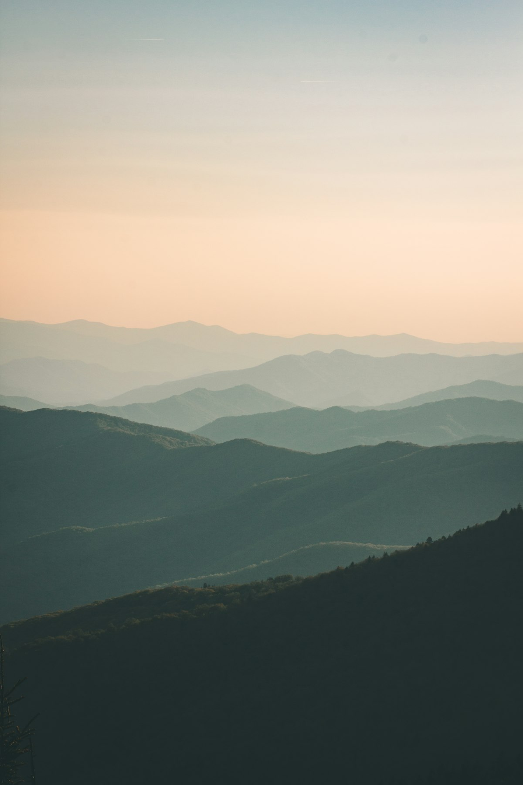
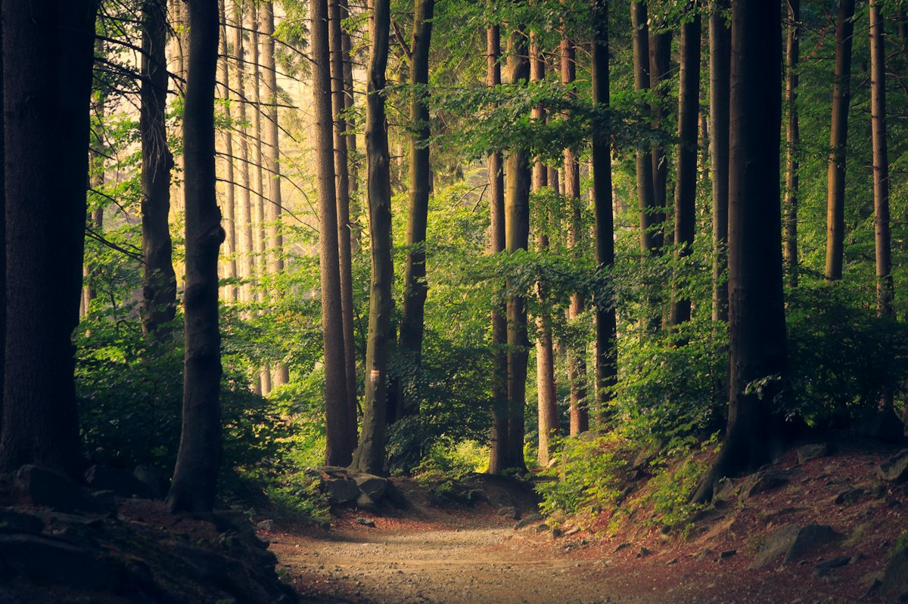

Mountain Adventures
Mountains remind me that every difficult climb can lead to a rewarding view.

Peaceful Forests
Forests are calm, green spaces where I would love to take a quiet walk.

Water and City Lights
From the sound of ocean waves to busy city evenings, every view has its own story.

My Gallery Wish List
Here are a few places I would like to photograph in the future:
- A sunrise over a mountain
- A waterfall in a forest
- A quiet beach at sunset
For more travel inspiration, visit National Geographic Travel.